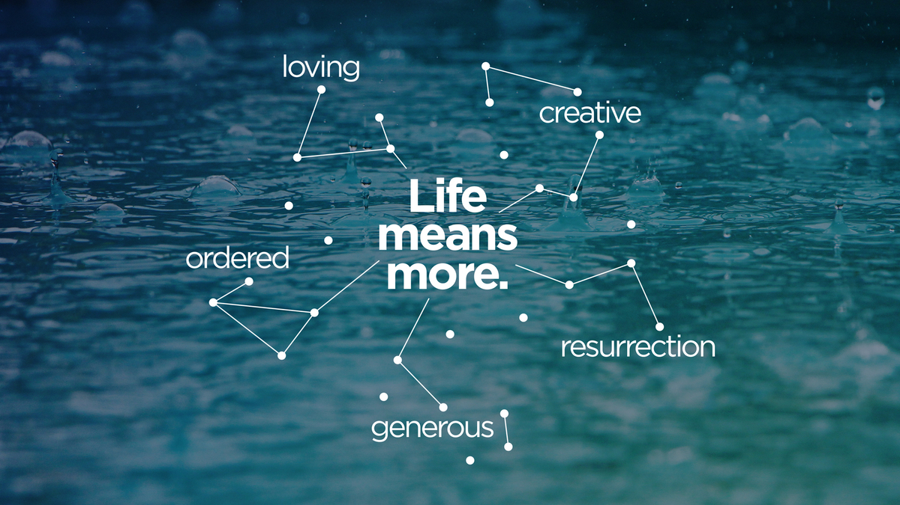

Life means more; it is Creative.
God carves purpose and life out of "wild and waste."
Genesis 1 — Approximately 10 minutes
Take a few minutes to discuss your initial thoughts on the video.
Rethinking "Nothingness": The video introduces the Hebrew phrase tohu vavohu ("wild and waste" or "unordered and uninhabited"). How does this ancient idea of pre-creation chaos change or expand the way you traditionally picture the "beginning" of the world?
Redefining Creativity: The commentators describe God's creative act not just as making physical objects, but as carving an ordered, flourishing space out of dark chaos. How does this definition of "creativity" differ from how our culture usually uses the word?
The Unending Day: The video points out that the seventh day has no "evening and morning" — it is designed to be an eternal state of rest where God dwells with His partners. How does this shift the goal of the creation story for you?
Let's read a few specific segments of the Genesis story and see how God's creative ordering takes shape.
Look closely at verse 2. What are the specific conditions of the land before God speaks?
When God speaks light into existence in verse 3, He doesn't eliminate the darkness entirely; He separates it and gives it a boundary. Why is establishing boundaries and order the very first "good" and creative thing God does?
If God's brand of creativity is about bringing order, purpose, and flourishing out of chaos, what does it practically mean for humans to be made in His "image"?
God commands humanity to "rule" and "subdue" the earth. In light of God's actions in the previous days, how should we understand this ruling? How do we actively participate in this "creative" mandate in our neighborhoods, workplaces, or homes today?
God rests on the seventh day. In the ancient world, a deity resting meant they were taking up residence in their newly completed temple. If the entire cosmos is designed as a temple for God to dwell in with us, how does this give deeper meaning to our church's focus statement that "Life means more"?
The Bible Project study notes point out that Genesis 1 is a highly structured, intentionally designed piece of literature. Let's look at how the way the story is told helps us understand its meaning.
Function over Substance: Modern science naturally focuses on a "substance-oriented ontology," meaning we define existence by physical, material structure. However, the ancient biblical authors focused on a "function-oriented ontology." In their minds, something came into existence when it was separated out and given a function and a name. How does reading Genesis 1 as an account of God giving function and purpose to the cosmos, rather than just manufacturing matter, change how you view the world around you?
The Symmetry of Creation: The study notes highlight that the six days of creation are designed as two matching triads. Days 1–3 address the problem of disorder by organizing distinct realms (skies, waters, land), while Days 4–6 address the problem of emptiness by providing inhabitants for those exact realms (lights, birds/fish, animals/humans). Why do you think the biblical authors used this kind of "literary origami" to describe God's work? What does this deep symmetry tell us about God's character?
The Cosmic Temple: We often assume God's "rest" on the seventh day means He was simply tired. But in the ancient world, a deity resting (nuakh) meant they were taking up secure residence and assuming command in their newly built temple. Genesis 1 depicts all of creation as a cosmic temple prototype. If the entire universe is the temple where God has taken up residence to run the cosmos, how does that reframe the way we treat the physical world and our daily routines?
As a math professor and AI enthusiast, I can't help but see echoes of these themes in the technology we build. Let's explore some connections between the ancient themes of Genesis and the frontiers of modern technology.
Ordering the Data Chaos: In Genesis 1, God's creative act is fundamentally about taking raw, "wild and waste" chaos and speaking order, boundaries, and purpose into it. In the world of machine learning, we build algorithms to process massive oceans of unstructured, chaotic data to find patterns and establish logical order. Is our drive to develop AI a natural extension of our God-given mandate to bring order to the world, or does it represent an attempt to rely on our own wisdom?
Delegating the Dominion: God delegates His authority to humans, creating us in His "image" to rule over and care for the earth on His behalf. As we build artificial intelligence systems to make decisions, solve problems, and manage complex tasks for us, we are essentially delegating our delegated authority to machines. What are the moral and spiritual risks and rewards of creating systems that mimic our own reasoning?
Defining the Boundaries of "Good": God established boundaries for the darkness and the waters, and He repeatedly called these limits and functions "good." As AI models become more advanced and capable of autonomous generation, how do we ensure we are establishing "good" boundaries for these systems? How do we keep our technological creations oriented toward human flourishing rather than allowing them to introduce a new kind of tohu vavohu (chaos) into society?
Bible Project study notes for this week's passage
Full transcript of the Genesis 1 visual commentary
Next week, we will be looking at Proverbs 8 and the theme of an Ordered life. Download the study notes below to prepare.